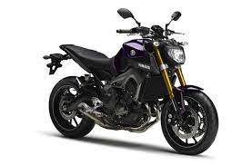
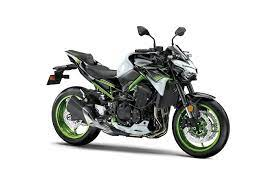

THIS IS ABOUT MOTORCYCLES
There are categories of motorcycles
- Cruisers
- Street Motorcycles
The best street motorcycles are Yamaha MT09 and Kawasaki Z900
- YAMAHA MT09

- KAWASAKI Z900

YAMAHA MT09
The MT-09 is the first Yamaha motorcycle since the XS750 and XS850 to be powered by an inline-three engine. Both are shaft-driven motorcycles produced from 1976 to 1981.
In 2017, the MT-09 was updated with fully adjustable suspension, traction control, ABS, slipper clutch, LED headlights and updated styling.
YAMAHA MOTORSPORTS
KAWASAKI Z900
Launched in 1972, the 900 Z1 - more commonly known as the Z 900 - has entered motorcycle history to become a mythical machine thanks to its incomparable line,
a subtle blend of sobriety and perfect elegance, and its dynamic performance that will outperform the reference Honda 750 Four
KAWASAKI MOTORSPORTS